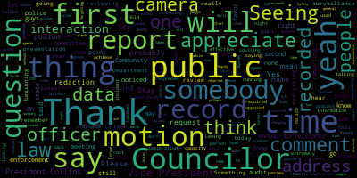
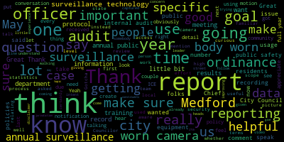
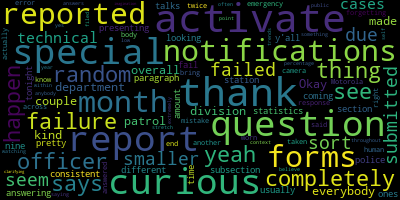

[Lazzaro]: This meeting is called to order. This is the May 7th Public Health and Community Safety Committee. On the agenda today is our annual surveillance report presentation from the Medford Police Department. This is from the community, I don't know what CCOP stands for. I can't remember. Community Control of over public surveillance.
[Marie Izzo]: I knew that.
[Lazzaro]: And we are going to be reviewing the 2024 Annual Surveillance Report. So I would love to welcome Chief Buckley to the podium. Thank you so much for this report. We had some time to review it since April. And why don't you Give me your presentation. I have a couple of questions, but I'd love to hear a summary of the report. It's like 35 pages, so there's a lot in there. Carry on.
[Buckley]: And I just wanted to. Well, thank you for having us here and I'm happy to have submitted this report and I see that everyone has had a chance to review it. I did bring Lieutenant Pat Duffy here with me he is the commanding officer of the 41 camera unit. He, if we have to get into a little bit of how we redacted how we do the statistics etc he's probably much better at explaining these. In addition, I have Officer Frank Casarino who works with them full-time. We have two full-time officers. They are the officers who handle that. And additionally, I brought Lieutenant Joe Casey, who's the public records access officer for the police department, should there be questions as it relates to that aspect of the body-worn cameras. I remember last year in 2024, we presented the 23 annual surveillance report, and it was much shorter than this because we were only in operation with body-worn cameras for about one month. This is a full year of the 41 cameras in play. And I have to say, we find the program to be successful. It is accomplishing all of the objectives that we as a police department wanted to, you know, want to obtain. And, you know, we, in 2024, officers made over 31,000 videos. Of those 31,1883 were related to rest now that doesn't specifically mean we had 1800 arrests, a single arrest may have 123 and or more body one camera so it's just we count them separately and how many videos that we actually record. And of all of these videos, 342 of them were requested by the district attorney's office to assist with their investigations and prosecutions. But technically not a public records request. It's part of discovery in the courts. It's still akin to a public records request, but they are far and away the largest agency or a group of people that we distribute our, public records reports to separate from that separate from the district attorney's office there were 32 public records requests filed, of which four of them we could not, by law, fulfill. That's mostly because they were related to domestic violence cases will never share those videos as it comes out. And we did audit the body-worn cameras. And if there's questions on that, we have an audit process. And we run three general scenarios where we check every officer's body-worn camera to see if they're complying. And we keep statistics related to that. That is definitely a Lieutenant Duffy area to talk about if you want to get into that once we're done. We are finding areas where we're doing well and areas where we need to improve, I think, as would be expected. Additionally, without audit we we audit our supervisors to make sure that they're accessing the appropriate videos and under their command and not just randomly. fall through, I would say that. with some marked improvements. This program is doing very well. The costs are relatively the same from last year. It's the salaries of my lieutenant and the patrol officer, Casarino, who's in there. In addition, there's some overtime costs. I mean, we get a number of requests for 41 cameras that are needed last second. So those weren't totally calculated here. And then we need to purchase five more body-worn cameras. And you can see the amount is $10,926 as it relates to that. Outside of that, there's a whole bunch of statistics here. I don't know if that's exactly what you want. But they're there for people to review. And if they're factual and people have an interest in those, they can ask questions of them. So in general, I think the program is running well. I think we have no major issues. And I'm here to answer any questions I can as it relates to the use of the 41 cameras.
[Lazzaro]: Thank you. This being the first time you did the full year's worth of reporting, were there any issues you faced with? Something that occurred to me right in the beginning is the, were there any complications with, I mean, everything's, is everything self-reported or you audited the, there was like random samples taken of certain incidents and then that was reviewed. It wasn't really the officers reporting themselves, it was that the team that was doing the audits was reviewing the data from the camera.
[Buckley]: Correct. The team will randomly just pick it. They'll check my body on camera, they'll pick three just random, like body worn cameras, they try to one has to be connected to a motor vehicle stop type stuff, and just a general incident, and they'll audit in that case, I will say that in many instances, if we're sending that body with camera off the court, they're doing that audit at that same time, right? So because they're reviewing the officers, but in general, they're just random audits. The all all body one camera that an officer produces is downloaded to our system anyway so they don't it's not like they have a selective choice of what to be reviewed we do it once it's gathered. The.
[Lazzaro]: Two things that I noticed in the review of the data that was pulled is that it seems like it's still difficult for everybody to remember to take their cameras, probably just because it's still kind of a new process. And somebody is running out and they put their camera down or they're charging it and they ran out without it. And the second thing is something that I noticed really consistently is, did the officer advise all involved they were being recorded? In the audits, in the general incident audit, more often than not, they're not advising people that they're being recorded. Is that like another thing about having to rewire your brain, it's the first thing you say?
[Buckley]: So in both of them are, this is new practice, right? And we have to get this drilled into offices and build them up. But they are two of the shortcomings that we want to improve on when it comes to that. But I'll add a separate caveat too. You know the body one cameras can sometimes we get to use them all the time so if I'm out there and I have that body one camera for about an hour and a half on a call and I show up at the police station again and I want to start writing a report. I'm downloading that in the middle of the shift so. as opposed to at the end of my shift, I'm putting it in there, everything is downloaded and I put the camera back on me. And sometimes when you're doing that randomly throughout your shift, another call comes in, it could be a call of an emergency nature and you're gathering up your stuff and you go out the door and you forget. So there's, it's a little bit, it is still habit forming and stuff we have to work on, but it's for the reason that we're constantly downloading the 41 cameras to make sure that we have that data as soon as possible. and that the officer doesn't have to wait at the end of the shift of a total that we get a lot of those. I forgot to grab my camera.
[Lazzaro]: So I think I had one more. Are there, I was hoping when I was looking at the data that it might be at the beginning of the year that there would be higher incidence of forgetting or not advising people that they were being recorded, but I didn't notice that pattern. So I was wondering if I could ask, and maybe this is a question for you, Lieutenant, if there are methods being implemented to remediate those things.
[Buckley]: So short of we spent the first year as, not a training period, but like a grace period of like, look, we're not gonna get into a level of discipline yet because this is a totally new process and concept. The lieutenant does work consistently with officers who forget and advise and advise and advise. But at some point we are probably going to get into the level where we have to just sit officers down a little bit more and make sure that's happening. Additionally, we're just gonna throw some more training at them and it's just habit form, right? And I will, There's all sort of circumstances right not every call is a call where you can walk up as a police officer and say okay here's step one step two step three sometimes you're in the middle of it without, you know, people yelling at each other and you don't really have that time. Now the policy will say as soon as possible you do it, but you get caught up and you forget. So there's a lot of extenuating circumstances is why a police officer on the street might be either distracted or forget to do those things to no fault of their own. It's just something that we have to continue to work on and we will do so through training and exercises. But we see that as, Having put this in policy, we've learned a lot about the 41-camera program. We've learned a lot about what happened to the police departments. And they are seeing this across Massachusetts and other police departments, too, where there's little aspects that you forget. It's getting them to turn it on is the big part, and shut it off on the right time. And the advisements are coming along. It's habit. It's practice. It's training. But to their defense, there are a lot of situations that are just volatile. And those things sometimes go out the window. I understand.
[Lazzaro]: Uh, Vice President Collins is number four. Hold on.
[Collins]: Sorry. Wait. Enable. Takes me a while, too. Gotcha. There we go. Thank you. Thank you for being here, Chief. Nice to see you. I want to thank you for your efforts in putting together the annual surveillance report and for your whole team, which for one, I'm sure was a collaborative effort. As was stated, this is the first annual surveillance report that we're getting on the body-worn cameras program for a full year of usage. When we spoke last year, I think it was just about like a month of 2023 that they had been in operation for. This one is different in that we're Glad that we're really sinking our teeth in on this one. It's good to be able to see a full year's worth of reflections and data. For folks who are just tuning in for the first time, I just want to set some context. This is the annual recording that we get on body-worn cameras. through to year 2028. Ordinarily, surveillance technology undergoes a use policy and impact report process. Body-worn cameras were exempted from that through 2028. So I think this makes this an all the more valuable part of this process, because this is our opportunity to discuss and to learn and to talk about those topics, which would otherwise we'd have several conversations about and several documents about. I also just feel it's important to state that in terms of the goals of this ordinance that this report falls under, to me as one Councilor, it's more important than ever to be having these conversations, and it's more important than ever to be refocusing on the goals behind all of the reporting and all of the conversations under the CCOPS ordinance, which is to make sure that residents in Medford are informed of what surveillance is going on in our community, to make sure that they have all of the information that they need about surveillance technologies that are approved in our community, And to make sure that we are all of us as city leaders very aware of protocols and the policies to keep that information surveillance data secure. It's important all the time, as we discussed a lot over the past couple of years, lots of security risks, cybersecurity concerns to take into account when we're talking about surveillance technology. And in these times when we know that there are other jurisdictions active and present and working in Medford, I think it's all the more incumbent on us to make sure that we're getting good information out to Medford residents and being really aware of what our policies are for keeping a very, very tight lid on the surveillance technology and data that we do have. and staying really clear on those policies that make sure that we're only collecting the surveillance data that we absolutely need for local public safety goals. And I just feel that that's important to state at this time, especially just a couple days after ICE was in Medford, again, for federal agendas that may or may not be related to local public safety goals. Having said that, Like I said, this is the second annual surveillance report that we've looked at on body-worn cameras. I do just want to be transparent as we're talking about the guidelines of the report and state per the ordinance, we're supposed to receive the annual surveillance report by March 15. We got this one on April 24. Going forward, I think it's really helpful for us to get it by the first quarter so that we can have more time earlier in the year to review. So I hope that next year we can be more familiar with the cadence of reporting on a full year of body worn camera usage.
[Buckley]: We'll get that in the calendar and have it prepped up for that time.
[Collins]: Great. Thank you. It's very useful to be able to look through a report, very thorough. And speaking of, you know, the scope of the report, a lot of what is in there in my read is, you know, I'm more familiar with the ordinance than most because I drafted a lot of it. A lot of what is in the report is critical information, well organized, asked for. There are some areas where those statistics are not asked for by the ordinance. I think they can be valuable to be in there, but just in case that is inflating the scope of work, I just do want to clarify that mention of specific, some of the statistics that mention specific people requesting special notification forms or specific officers involved in certain reporting requirements, that's not asked for in the ordinance. So if that is inflating the scope of work, if that added to the timeline issues, that's actually not necessary. just wanted to take this opportunity to clarify that. Not an issue, yeah. Thank you. And then I think that there are some other, I'm sure we'll talk a lot more about the results of the internal audit later. I think there are some other areas we're going forward would be helpful to have more detail and more of a story attached to those results of the internal, the results of the internal audits. And again, I had a couple quick I had a couple questions most relating to the results of the internal audits, but before I get further on that I just wanted to mention that again this is for folks who haven't. tuned into meetings about this particular ordinance before, so folks can know we're talking about the goals of the annual surveillance report, and this is true of any surveillance technology administered by any city, any department or agency in the city, is to provide a high level and generalized summary of the policies and usages concerning the surveillance technology, how it's been used, if the user feels it has been effective, which the chief has stated he believes that it has, the city. Um whether and how often surveillance data was shared with external persons or entities, the number of public records requests received by the city. Summary of any complaints or concerns that were received about it. The results of any audits. Whether the civil liberties and civil rights of any communities of groups in the city of being or have been disproportionately impacted by the use of the surveillance technology estimate of the with entities outside of the city relating to that data. And the report covered all of those topics, some more detailed than others. So thank you for that thoroughness. Most of my specific questions for you, Chief and to your team related to the results of the internal audit on the body worn cameras and I appreciated the clarity around, there was an audit for use, and then an audit for access. I think that's important. Thank you for breaking it down that way. And if I'm interpreting the report correctly, there was a random sampling that the internal audit drew from. I think in terms of the use audit, the biggest thing that jumped out to me was that it seemed like, in aggregate, in one in three cases, the officer did not advise all of the residents in their vicinity that they were being recorded. So that jumps out to me as the biggest red flag. That's a pretty high number to be deviating from the policy. So I'm curious if you can fill out that picture with What do you think isn't getting across what specific training is planned to make sure that we get that up to 99.9% instead of 33? Yep.
[Buckley]: Okay. With permission of the chair, I'll bring my team up because they're the actual officers who do the audit and they can tell you a little bit of how they go into it and what they're seeing.
[SPEAKER_10]: Great. Good evening. Obviously, some people, you know, I advise people that are dealing with it being recorded, but my little video, that person could have been the third or fourth person on scene. per policy, it's up to the responsibility for the first responding officer to tell people they are being recorded. So we don't have the second person saying a third person saying fourth person saying in a chaotic scene. So it may have been that this person was the fourth person on scene and just assume that the first person on scene advised everybody they were being recorded if you're a domestic in a small setting. And I just didn't have the time or the resources to go back and look at all other seven videos just to check that person off. So there are some instances where that probably did happen. And like I said, there's some instances that they didn't advise and we're on people all the time that they have to. notify people at roll calls. If I see someone that is showing up a lot that they're not advising, I call them in and I tell them I got to do it. And I usually don't have a problem. It's not a consistent problem. I mean, we have 31,000 videos. They're doing what they should be doing a great majority of the time.
[Collins]: Great, thank you. That's helpful. And I can understand it's a lot of footage to sift through to run down every individual case of, oh, did this person not say it because somebody, three officers ahead of them did. I think that is important information for us to have because the goal of this is to have an accurate picture of how effective is that training and really what is that number of Are there residents who aren't being informed that they're being surveilled? And I know that everybody's picking this up as fast as they can, but especially in these times, it's very important. So thank you for your efforts and making sure that the officers who need a reminder are getting reminders, but this is an issue of critical importance.
[SPEAKER_10]: And I can say that if anyone says they don't want to be recorded, unless there's like a crime going on, we shut our cameras off. make a note of that at the request of the person being recorded. They wanted us to shut our cameras off. We shut them off. Obviously, if we're in a call, we're going to be possibly making an arrest. We're not going to shut off that. But we have not had, to my knowledge, one complaint where someone said, you were recording me, and I didn't know about it, to my knowledge.
[Collins]: Great, well, that's good to hear. That's very good to hear. Thank you for that context. You're welcome. I noted that there were also statistics on when officers either failed to start or failed to stop the recording, whether it was You get to an incident, you forget to turn it on right at the start or you leave an incident and you forget to turn it off so maybe they're walking down the street walking to their cruiser. Could you speak a little bit more to cases like that.
[SPEAKER_10]: Just based on the ones that I reviewed, if I come across a video where they're at a traffic stop, and they're already talking to the person. Then I failed them, because they should have started it as soon as they were walking up to the car. But again, I mean they could have pulled up to that car and the person who's trying to get out, or they saw something when they had to get out of the car quick and they weren't thinking to turn the camera on and again it's muscle memory. There's, I don't see any ill intent on someone hiding anything or trying not to record it just. they're not used to it yet. And they turn around as soon as they remember. And as far as the end of the call, sometimes they're clearing the call and they walk into the cruiser and something, they shut it off and something, they get called back. And we have two videos from that call. Maybe they should have let the camera roll until they were clearing the scene completely. So that's why they would get failed on something like that, because sometimes it just doesn't end when they think it's going to end. They might get called back, potty call, and they see people still coming out of the house and they say, let's go back there. But they stopped their camera. They started up again. So I failed them on, just keep rolling to the very end, to you and your crew driving away.
[Collins]: Gotcha. Yeah, I can see how that could be a blurry line sometimes of when does the episode end?
[SPEAKER_10]: Right. And again, it's no ill intent, but they're just probably thinking that's something I could do to shut my camera off. Yeah. And then something happens, and they're putting it back on. But I tell them just keep rolling. I don't care if we have five minutes, if you want to cruise or drive away.
[Collins]: Makes sense. Thank you. In cases where I'm curious, have cases come up where an officer forgot to stop the recording, and they didn't just get in the cruiser, they were out in the street scene, non-involved people are captured that you came across in your audit. My concern is a camera not stopping and then people being surveilled who are just, you know, walking to Duncan going on the street.
[SPEAKER_10]: I can't say I've seen anything that I that would be alarming to me that it kept going and going and going. It might be more just like I said that continue to talk to another officer after they cleared something. And they did one of them left their camera and they talked for 15 minutes between the two but not keeping it recording. And because we have an alarm that goes off every four minutes that notifies that they're recording it buzzes. So.
[Collins]: Great. That's helpful. And the intent of my question is just, obviously, I think we're all very lasered in on wanting to make sure that there's not superfluous surveillance of people going on. So that's the intent behind the question. Glad to hear that that hasn't come up. No. Great. Great. Thank you. This might be more of a Chief Buckley question. If you could just speak a little bit more to the purchase of the additional cameras and the equipment that was made last year, was that just to outfit more officers? Was that to replenish equipment?
[Buckley]: You have the wrong person. Oh, guess wrong. I approve it, but he is the additional 541 cameras.
[SPEAKER_10]: We were running low, and we plan on hiring people, so we wanted to make sure we had How about your cameras? It was simple as that.
[Collins]: Okay.
[Buckley]: There are times cameras will go down or so we need replacements to be able to handle all the different offices. So five is just not enough. I think we're going to need more eventually anyway. So.
[Collins]: Is it current policy that any officer out in the community will be outfitted with a camera?
[Buckley]: Yes.
[SPEAKER_10]: Every officer has a camera, and they're responsible for that camera. And if something goes wrong, no one's lost or anything like that. But it's just like their own piece of equipment. They're responsible for it. We're not trading them around and dropping them off. And no one's losing them. They take good care of them. Sure.
[Collins]: I'm sure. Great. Thank you. Is there anything more that you can share? Given that these have been in use for, I was going to say, 13 months, but more than that now, coming up on you know, getting close to two years of usage. I'm curious if there are any updates to the outfitting and training protocols, given that the department now has more experience with both using them and with training officers to use them. Have there been any changes to the training protocol as we've spent more time with these?
[Buckley]: I don't think so we're keeping the pretty much the same training protocols going forward and there'd be, I'd like to tell you that they're becoming second nature as part of how we operate after after a full year, and of course there are things that we recognize we have to work on. But the training remains the same right it's this the problems that we're having to not. It's the technology is the technology, it's the human behavior of turning off at the right time turning on the wrong time, and that the action of advising people. So I think training is going to continue the way we've. been doing it with the hope of sort of increasing numbers. But I will go back because I probably should have mentioned earlier, the randomness of these audits, maybe are potentially are creating some of these statistical statistical anomalies, because we're just grabbing a video from Chief Jack Buckley. Now, again, if he's the second, third, fourth officer on it, we were grading him on that call based on the questions and statistics, but He may have already abided by policy because the first officer and see that's something but if we were to go back and say okay, let me check and see if that happened, who was the first officer, we would never get an audit that would take that long for us to get through all of these audits. So it is sort of problematic statistically that we don't have the full picture of who else was on the scene when we're taking these audits, but we are just looking at them straightforward and then trying to improve on those numbers.
[Collins]: Gotcha. That makes sense. I can understand that would multiply the work significantly. I think it could be interesting, maybe this would be a useful part of the narrative for next year's reporting, is not to apply that auditing scheme to to every interaction that you do audit, but just one or two to say, can we verify in this case, was it really just that they already heard somebody say it to try to identify if there are gaps there or if it can be perhaps a little bit more confidently attributed to somebody else got to it first.
[Buckley]: Yeah, makes sense to some degree. Thank you.
[Collins]: Thank you. In your experience, I know that you've said a lot of this is muscle memory. It takes time to get used to using these and used to the protocols. In your experience, and I'm talking high level here, do you see officers getting more comfortable and getting more accustomed to saying the disclaimer over the course of the year? I know this report is kind of a snapshot of the full year. Do you feel that January to December officers are improving at the disclaimer?
[Buckley]: You can have two answers. From a high level, I say yes. But from the lieutenant who's reviewing this on a daily basis,
[SPEAKER_10]: Absolutely. I mean, in the beginning, you could see people, especially more of the low key officers were a little maybe uncomfortable or felt reluctant to say it because they were nervous or whatever. It wasn't part of the repertoire. But now it's second nature. They get right out of the car, right, show right up. Hey, just so you know, you're being audio and visual recorded. And some of them are really, really good at it. Some of them do it. And some of them might, might be a little weak on it, but they do it. I'm telling you, I look at thousands of videos, and Officer Casarino does too, and he'll tell me if he sees someone that's having a problem, and we don't see anyone that sticks out, that will say that he's not doing a good job. If anyone even gets close to being a somewhat issue, we're calling them in, and we're addressing it. We're telling their sergeant to keep an eye on them. We are following up and watching their videos from the time we talk to them, and it's not a major problem.
[Collins]: Yeah, thank you for your fairness.
[Buckley]: Another point to kind of highlight some of the difficulties we have. Keep in mind that every officer has a body-worn camera. Now, I think, naturally, when we talk about these in an open forum like this, we're thinking of the patrol officer who's in a cruiser responding to call after call, and their habits are getting much better. The worst person in the department is probably myself. I mean, I have a body-worn camera. I'm turning it on. three times a year, maybe, and it's just not a habit that is forming for me, right? I mean, I wrote the policy, I know all these policies, but some of the audits and what we're doing with people who are not just using body-worn camera every single day and every interaction within their careers, right? So there's a degree in how much a police officer would use that versus another police officer when it comes down to it.
[Collins]: Understandable. And I appreciate both of your attention to this issue. And obviously, you know, my take on it, I think it's really important that we do that disclaimer every single time in addition to all of the other essentially security protocols that are baked into this policy. So appreciate your commitment to making sure that we get better and better at those as time goes on. Great. And just my last question for right now, most of my questions are around the use audit relating to the access audit. It seemed like there was much fewer issues that popped up in that one. Is there any, can you just fill in the picture a little bit for us? I know it's the only, the higher level officers that would be accessing videotape in any case, and that would be only if in the event of a specific trigger, if there's a specific reason or justification for them to be using that. for them viewing that video footage, could you speak a little bit to how that audit worked with the access audit and any findings or updates to trainings that you're planning?
[Buckley]: Okay, so I'll speak to the intent and then we can get to the audit with the lieutenant. So the intent is that we just don't want people watching body-worn cameras that they have no real interest in. I'll use the extreme example. I do not look at body-worn camera video. I don't, I don't access my office's body-worn cameras. I don't sit there and see what people are doing during the course of the day. The only time I will access a video is if there's a need to, right? And it's there, few and far between. Outside of that, we will have a command level. So if you're a patrol officer, your sergeant has access to review your body-worn camera video to make sure a report is accurate on what you're doing on that shift, as well as your lieutenant. Outside of that chain of command, nobody should be looking at those body-worn cameras videos. There is exceptions made for detectives when they can get assigned a case, they should have access to body-worn cameras and they could have to review. But as far as the audit goes.
[SPEAKER_10]: Like the chief said, we have a video evidence library and right now we have 40,000 videos. Each officer can only access their own videos. Detectives, sergeants, lieutenants, captains and the chief have access to all 40,000 videos. To prevent anyone from video surfing, what I did was picked out some of our more high profile calls where people talked about it or there were several officers on scene so there'd be a lot of videos. And I'm the only one that has access to that audit. And I would access who looked at that video. And then I would see if they were justified in looking at that video. See if that was the sergeant that was on scene. That's fine. That was the lieutenant that was working that shift. That's fine. For instance, it's a break in and entering, and now a detective is assigned to it. That detective's looking at it. That's fine. So that's how I was able to audit those calls. And there really is no desire from speaking to the majority of supervisors over the year they don't want to look at any videos that they don't have to. Great work.
[Collins]: Sure. Great. Thank you. And of course, with all of these questions, it's not a line of query is not about any sort of bad faith from the force, but rather wanting to make sure that there are these really secure protocols and just giving the city council a chance to hear what are the security measures that are in place? How are they being enforced and maintained? Thank you. All right. I'll probably have more later, but I think that's it for me for now. Thank you very much.
[Lazzaro]: Just a point of information. I had two interactions. Malden also has body-worn cameras, and I had two interactions at the Malden Warming Center this winter with some officers. One was an extremely chaotic night. I was not the first person to see the officer and I was running back and forth in the center and I ran back and talked to him to help them address a concern. So I didn't hear him say, you're being recorded but I think it was probably because he said it when he walked in the door to somebody else. And the second time. It was somebody that I talked to outside who was just asking if we were at capacity. And he said, do I have your consent to record? And I was like, yeah, why? And he was like, are you guys at capacity tonight? And I was like, we are. And he was like, OK, bye. That was the whole interaction. I was like, you recorded that? That's funny. But every single time, of course. But even, I mean, even the first interaction, I don't doubt that he said it, he probably did. And I just missed it because I was, it was an extremely chaotic night. I mean, it's, but I think muscle memory is exactly it, right? It's just part of the thing, you know, after a while, probably when they first did Miranda roads, it was the same thing. And people didn't weren't used to saying them. And then now they do. So I appreciate your all of your responses. And it seems like you're very thoughtful about the ways you're going about handling this stuff. So I appreciate it. Councilor Callahan has had her mic request on for a long time. I will go to Councilor Callahan.
[Callahan]: Thank you. Thanks for being here. So I have a really kind of a follow-up question to Chair Lazzaro's, just because I did notice that the sort of percent and number of incidents between January and December didn't seem to change. And I think I understood that, Chief Buckley, your response was that there are actually types of incidents that are just difficult to, you know, make that happen from beginning to end. And I was curious if there if, like how our sort of percentage rate compares to other. cities who also use body worn cameras. If we have a goal, if we have already reached the goal in terms of like percent of, you know, special notification forms that we get per month compared to like out of the recorded events. Um, so just curious if, uh, we feel like we are at our goal like as an average of 0.72 or if we think we can get better, or do we think that this is where we're where we're expected to be a year or two from now?
[SPEAKER_10]: I've spoken to several departments, and more than not, they don't even do audits. And I was just at a recent department myself and Officer Casarino, they're not even entertaining audits. I will say that we're probably leading the pack as far as doing the audit, by far. If someone can produce another department's audit that's better than this, then we'll work to improve it and be better than them. But I don't see one.
[Buckley]: I'm talking to them. Thank you. And I'd just like to add that we did come in here and we openly say, these are numbers that we want to improve. Having said that, we're less than 3 quarters of 1 percentage point off If you would, we didn't set a goal I wouldn't set a number this is a first year we're looking at if you would ask me to set a goal. What would that number be half a percentage point, I mean, it's it's difficult to that's probably we're working with such infant test. small numbers that we will, we'll just keep working to kind of improve that process. But I mean, it's not bad. And we are auditing it and the things. But I did say, and I openly say, we came in here saying we want to improve on that. So we will continue to work on that.
[Lazzaro]: Thank you. Councilor Leming.
[Leming]: Thank you. And thank, I'd like to thank all of y'all for coming out here tonight and presenting the report and answering our questions. In the statistics section where it talks about the special reports, the special notifications forms that were submitted, looking at the month to month fail to activate ones, it's a pretty consistent amount there between nine and 15 from each month reported in 2024. I'm curious, is it Is it completely different officers who have these failed to activate reports submitted each time? Is it sort of a smaller subsection of officers? It says in the paragraph above that this is usually due to an officer being at the police station and then just forgetting to bring their body-worn camera when they're taken out in an emergency. So that does seem to be another human. error. Some of these are technical. It says they have to do with the Motorola failure on the technical end. But I'm curious if these cases of failure to activate are due to, if they're completely random across the department, or if you happen to know if it's smaller.
[SPEAKER_10]: I'd say it's the majority of the patrol division. Because the majority of probably these fail to activate are, these are self-reported by the officer. They fill out this form. Most of the time, a supervisor even go on to them and say, you didn't make a recording. They run out of the station to back their partner up or whatever. They get their camera, say, I'm not going back. My partner will have his camera on. That's more important to back his partner up. I mean, there was going to be a camera there. And they come back and they fill out this form.
[Leming]: You actually answered my other question right there in your response, which is how how is it? How is it reported? So it is the patrol division, as you said, but do But is it has like everybody in the patrol division kind of like made this like made this mistake sort of once or twice throughout the year. And that's just kind of like a random things that happens to everybody. Or do you see like a couple of like a couple that you see self-reported?
[SPEAKER_10]: I'm sure there are officers that have never had an issue and there probably are officers that had three or four times during the year that we spoke to them. Like I said, there's no one person that's 10, 12, 15 times over the course of the year, that would be a red flag for us. It's more once or twice. And there's probably several offices that haven't had any issues.
[Leming]: Okay, okay. That answers the question. That was the only thing that I was That was the only thing that I was curious about in the report. Thank you.
[Buckley]: You're welcome. Keep in mind that we respond to thousands and thousands and thousands of calls each month at police offices. These are the numbers we're getting.
[Leming]: see that it's like it was just just for context, this is, I believe it was, yeah, it was saying that it was a 2024, 224 of these special notifications forms were filed, of which 131 were failed to activate, and this seems to be out of Yeah, it's a 31,326 with 224 special notifications forms and it says here that's point 72%. So, yeah, just for just for anybody from the public watching what I was having questions about was an extremely low percentage of the overall cases. I was just curious about the overall trends within the department if these were completely random. But yes, the failure to activate is not something that happens often by any stretch of the imagination. So thank you for clarifying that.
[SPEAKER_10]: May I add to also, when we have three or four officers that go to a call that results in an arrest, and when the district attorney requests the body one footage, they will look at the report and request every officer on scene, their footage, and then officer Casarino myself will go through, find those videos and send them over if we come across officer x was at that call, and there was no video. he better have a special notification form, because the court also requests, after we tell them that there's no video, they want that special notification form. So these officers don't want to be filling out a special notification form saying, I didn't turn my camera on. Because if it's especially on something like an arrest, they're going to be called to court and say, why didn't you turn your camera on? So there are a lot of safeguards that we can figure out who didn't turn their camera on. If they didn't, 99% of the time, they fill out a special notification form. Because if we're not asking for it, the district attorney is going to ask for it when they request that, but in discovery.
[Lazzaro]: I appreciate you guys presenting this report to us with so much thoroughness. It's our first time seeing it to this degree. It's a new technology, it's a new ordinance with the reporting requirement, and it's our first time having access to this level of data, and we're also learning about how you process the data. So we've had a lot of questions today and I appreciate your comprehensive, thorough responses. So thank you very much. Do any other councillors have any comments or questions at this time? Seeing none, I will, oh, one more, sorry. Councilor Tseng.
[Tseng]: Thank you. My fellow councillors stole all my questions about the BWCs. Can I, ask while we have you guys here, I know residents have been reaching out to us about the police department's policy with Immigration Customs Enforcement vis-a-vis the non-cooperation policy that we have in place. I was wondering if you could speak to reports of the FBI trucks that were in the police department's parking lot, as well as FBI agents walking through the offices and public spaces of the police building itself.
[Buckley]: That specifics I've not heard. Here's what I know of the incident, and it seems that others know a lot more than I do. We were notified yesterday morning from Immigration ERO that they would be in the city of Medford. That call came in around four o'clock in the morning, right? So these federal agencies and the city of Medford, we do that to de-conflict. We do that with other agencies, right? We don't wanna have problems knowing that there are other agencies out there. outside of that, we have no knowledge of when they're coming, where they're going, or what they're going to do. It wasn't until I received a text message from Council Abiz that they were on Salem Street by the target area. And again, I have no knowledge of that or what they were doing there, but at some point in time, whether a crowd gathered or some other instance, they felt that they were creating a stir and it was unsafe for them, so they responded to the public area of the police department to kind of finish up whatever they were doing, talking to each other. There was no operations with the police department or within the police department, and then they left. I don't know the full extent of how long they were there. I'm venturing to guess it was less than 10 minutes. The theory sort of being that, you know, if you got immigration units out there in the city, and they're just standing on corners, they create a lot of havoc and people get scared and nervous, whereas if they have to gather and they pull in near a police station, it sort of looks like they belong there, right, and it causes less concern. It is what it is, but as far as our policy goes, we are not, you know, we have nothing to do with their operations. What they were doing there, I have no knowledge, but to the extent of that, I'm fully aware, and I had my lieutenant captain look at it. They just pulled in there, talked, and left.
[Tseng]: I think I understand it's like a it's a tight, tough tightrope to walk with regards to, you know, deep deep between different levels. I think what the Council was what you know the Council was reminded of and what we've, we want to emphasize to is that in the welcoming city ordinance, there is language in there about not using, not giving police spaces over, public space, or city spaces over to, for use in, you know, operations like that. So I think just, just that was flagged to us, for us to flag as well. And yeah, I mean, I think the question is, why were agents, why did it seem like agents were in the buildings, especially in private parts of the buildings that needed to, they needed to be scanned in? I think that was a
[Buckley]: Who's reporting that?
[Tseng]: I was there. So I saw an agent walk through the first floor, including through the kind of doors that you have to tap. You have to have a badge to slip into. When was this? This was, I went early yesterday, 10-ish. It was in the morning yesterday.
[Buckley]: I mean, I'll take a look, I have no idea.
[Tseng]: It was someone in that FBI year, so it wasn't someone in ICE gear. And I didn't know if those two things were completely linked with each other, so I flagged it to Councilor Bears, who flagged it to you and the Mayor. I think the other kind of question that Councilors had at the time was if we have a kind of system built into place where at least we might know about these things happening when you As the police department find them out as well. I was wondering if it would be possible for you to notify the mayor's office city councilors department heads when you know you get a notification that they might be in the city.
[Buckley]: Yeah. That's not gonna happen, and I don't mean it in a cruel way, but ICE or any other federal agency works with the police department on a law enforcement level, and we do things interoperability-wise to sort of survive and understand what's going on. In following up, the question is, immigration calls the city of Medford tomorrow and says, hey, we're in the city of Medford, and I call you. What are you gonna do with that information?
[Tseng]: I mean, I think sending out know your rights information I think would be helpful.
[Buckley]: You're going to go on social media and tell everybody ISIS in the city, the police are telling us it's not and then I'm going to get charged with, you know, interference obstruction and then they're never going to call us again. And then I put my offices in danger.
[Tseng]: I mean, I think, yeah, I mean, this is the conversation. This is why we're asking the question. So we can have this conversation. So members of the public can know what's going through all of our heads. Yep.
[Buckley]: Yeah, no, I think that's they understand what cities they're working in, and where there are non cooperation clauses. So they know where they are, and they behave in a certain manner, right? And that's, they're not going to tell us anything, they're not going to operate with us. And That's the only way. I have no idea what they were doing. I have no idea if they took somebody into custody or what they did. No knowledge at all. And there's probably no way they're going to tell me. And that's consistent with what's going around in Massachusetts.
[Tseng]: And I do want to clarify that the non-cooperation policy law ordinance is just for civil cases and not criminal as well. I think that's for the public to know that.
[Buckley]: Yeah. And I will just openly say, I mean, the question is like, behind the police station is not just, I'm not gonna say public property, but that's a public street. That's Union Street, it's a public road. I don't know where we're going to get in this world if I walk out there and say, hey, listen, you're not allowed on public property. I understand what the ordinance says about use of facilities and like assistance with booking and all that sort of stuff. There's this one standard of what that is. Maybe, what if they pulled over to use the bathroom in the public lobby? Am I restricted from telling them no? It's a fine line for me to draw.
[Tseng]: And I don't think that's what the ordinance would say, but yeah.
[Lazzaro]: No, actually, I have the language from the Welcoming City Ordinance. It says no city funds, resources, facilities, property, equipment, or personnel may be used to assist or participate in the enforcement of federal immigration laws, except as required by law. or a court of competent jurisdiction. And what we're talking about is just the civil removal of people in violation of immigration laws. So again, if it is an FBI operation, that's a separate thing. If it's a criminal investigation, if somebody is, if there is a warrant for their arrest, that's legitimate, that's not what we're talking about. So we get a lot of inquiries about the stuff and we're following up on sometimes on questions that we get asked by our constituents. So I appreciate your- Yeah, at the risk of saying you may know more than me at this point in time.
[Tseng]: I mean, these are very tough questions. We get tough questions ourselves. So I think in these situations, best for us to get a bit of transparency, just for us to know where you guys are coming from. For us to flag things that residents are using as well.
[Buckley]: And if I may, you said you saw this right so that yeah I was there, were they all wearing FBI gear.
[Tseng]: Um, I believe so. Yeah, I believe, at least the people, I mean, I think everyone was either in MPD year, and I think the MPD folks were just doing their regular jobs. I didn't see them, you know, interact with or talk to the FBI agents. And then I saw a bunch of FBI agents in the lot, because we were trying to park there to get the, I was there to get a police report. And then while I was in the hall in the lobby, getting the police report, I saw someone walk through. and exit from the front, but they looked like they were walking from the back. And I just don't know the layout of the first floor well enough, but it seemed like they were walking through a place I hadn't been to before.
[Buckley]: Now, it's interesting because the immigration and the removal teams are borrowing weekly from all other federal agencies, right? So it's not unheard of to see FBI or DEA or US Marshals on an immigration team when it comes down to that. But we also do a lot of other work with the FBI.
[Tseng]: Of course, and that's why, you know, just wanted to flag this and say, I, the reason why I didn't make a big fuss about this was because I didn't know if this was like, you know, another routine kind of cooperation. I just wanted to flag.
[Buckley]: Yeah, they have not put us in that position and nor have we been in that position where they've either demanded assistance or they're going about operating independently when it comes to it. So it's not even been an issue for us in that sense.
[Lazzaro]: Vice President Collins.
[Collins]: Thank you. Just to follow up on that, and I think this is probably implied in what you just said, but since the report that we're looking at today covers 2024 and not January through May of this year, have any federal agencies requested surveillance data that was captured in 2025 that wouldn't have been captured in this report?
[Buckley]: I don't think so, but yeah. Not through my office, definitely, and not through the 41 camera here. And they would have to go through them. So no agents, no federal agencies at all.
[SPEAKER_10]: No, we only know the public records request.
[Buckley]: Yeah. Lieutenant Casey, anything on public records from a federal agency? And to some degree, if they did file a public records request and it was legitimate, we would probably service that. But as if through a public records request, yeah.
[SPEAKER_10]: I can say that nothing's been given up.
[SPEAKER_08]: The only agency that has requested any public records would be DCF as of this year. And we work in partnership with the Department of Children's and Families on cases of child abuse and neglect. But no federal agencies have requested anything from us.
[Collins]: Thank you. That's good to have confirmed. And not to belabor the point I know we have folks in the audience who also wanted to speak to the matter at hand but since Councilor Tseng brought it up. I appreciate the candor about this chief. You know, it's troubling. I know that we're all troubled. We all share in that. I do think that we need to honestly have more of a discussion about what a more collaborative notification system could look like in the city. I understand that there's a lot I don't know about the pressure that you're under. However, I do think that there's more to this story about which city officials should know if one gets a notification that ICE is coming to town. I don't think that the only way this could look is social media and then a mass panic. I think that there is a vested local public safety interest in having some heads up about, you know, obviously sometimes other jurisdictions come in and the goal is there's a warrant for a dangerous person and it's in the interest of public safety, that is dealt with. We've also seen raids in neighboring communities. We've seen ICE show up at schools and things that I think are counter to all of our values and goals. So I just, for me, I think that, I don't think this is the meeting to figure it out, but I do just want to put it on the record. I think that we have to have more of a conversation about this notification system and what that could look like, because I certainly don't think that I don't think that's something that any of us want, is you say, heads up, I got a heads up, and that's all that I got. And then I don't think it's, personally, I don't think any colleague of mine would say, let me create a conflagration that's only going to upset people and not be helpful. And to me, it doesn't follow that would, the action of another leader would, justify accusing you with impinging on an investigation. I think that there's a valid reason to talk more about this and
[Buckley]: So, I mean, we can have the conversations, and at this point in time, I don't change my opinion on where it goes, and it's not a political, it's just a law enforcement type safety opinion. I can't jeopardize my offices when it comes to other law enforcement agencies operating in the city of Medford. Having said that, the obvious outcome would be is they're not gonna call us.
[Collins]: Sure, I guess to me, it's like, what's the difference?
[Buckley]: my office of safety.
[Collins]: The officer's safety is impacted. Yes. If they know if ISIS is here or if they don't.
[Buckley]: Not all police operations are safe, right? Sometimes they go sideways and haywire. When we're aware that there's another agency operating within the city of Bedford, we at least have that knowledge in our head. And there are people in emergencies that we can reach out to and contact. a time when we managed to get that information. Without that knowledge, we might be just responding to an individual with a gun in the street. And so it's very clearly and very, I mean, this is tried through the ages in law enforcement. I won't put the officers in danger in that manner, but I mean, the inherent problems, as they notified me, we kind of know what's happening in the city for officers safety-wise. But if you follow through what your actual request is and intent is for me to notify you so that a whole bunch of other stuff can happen, right? Sometimes that can inherently cause undue fears. And I will add this, sometimes it can inherently just draw attention to the city of Medford. I think we all need to be aware that the actions that we take as individuals when it comes to immigration, the statements we make, somebody somewhere is paying attention. and we don't want to create a situation where we're sort of poking the bear or bringing agencies to the city because of our own doings.
[Collins]: Certainly, and I think we all are very focused on that and thinking very, very deeply about that. I just think for me, given that when it sounds like when ice is notifying MPD that they're going to be in Medford that they're giving such vague information anyway. Based on that that's my interpretation of what you said and you can correct me if I'm wrong they're not giving you details you don't know details you just know we're coming to the community. It just seems to me that there might be a little bit of room for negotiation on what can other leaders know again with, I don't think anybody is trying to create panic or create a mob situation I think I mean for me personally as one Councilor. I think we're all aware of how unhelpful and dangerous that kind of consequences that's not the goal.
[Buckley]: And I'll tell you, I don't, I know where my position is now and I'm not, I guess to some degree I am an expert to some of it, but like, I will also tell you that I don't know of another community that's doing that where the police department gets, you know, law enforcement sensitive information and sharing it with the public that makes the situation better. And so I would tend to try to want to look at that and see where it's going and not put ourselves out on an island for, and also not to create more conflict between the police and the public.
[Collins]: Sure. This is a really complicated situation. I think that we're all trying very hard to mitigate harm and reduce harm and Yep, establish some control in a, you know, certainly a bear was poked, not by us, you know, these politics are bigger than us. Yeah, that's my conviction. And now we're all trying to deal with the fallout and I think that there are things to discuss in terms of what can we do within our jurisdiction, not to be flashy not to get on national news but just to make sure that people are safer.
[Buckley]: Understood. Thank you. If I do that we will be on national news.
[Lazzaro]: Thank you. Do we have any other comments from Councilors? Seeing none. Yes.
[Buckley]: I had one quick point. Please. I forgot to mention this earlier today. Last year, while we were doing this, we mentioned the question was, how do we do redaction of these body-worn cameras and the suggestion of a policy? We did put a policy together. It's in there. It wasn't a whole lot to talk about, but I just wanted to mention it, at least before we leave, in case there was a question to it, that we do do a redaction. We do it in accordance to a policy, which was one of the things that was brought up in the year prior. So it's in there, and I forgot to mention it earlier.
[Lazzaro]: I noticed that, yeah, it looks good. There was a specific, yeah, I was, I'm looking at it right now. The requests and, or that's on this page, but there's a chart where people requested the redactions and yeah. Appreciate it. I will open it up to public participation in person or on Zoom. You can have a seat and you can come up to the podium. Please say your name and address for the record. and I will alternate if there are folks who would like to speak on Sam.
[Marie Izzo]: I will first go to the podium. Marie Izzo, Pilgrim Road, Medford, Mass. I just want to thank the committee and the chief for making available for public comment, as required by the CCOPS ordinance, the annual surveillance report. The purpose of CCOPS is to create a transparent community engaged process focused on the use of surveillance technology by the city. To date, We have body wooden cameras used from Medford Police Department and the automatic license plate readers used by the traffic department use policies and the reports help ensure that Medford residents understand what technology is being used in our community and how. We're glad to see that the ordinance is working as intended and that the public is being informed of their use and provided the opportunity to comment. We hope for the future that the timeline stated in the ordinance can be followed as we were prepared to review and comment in April. However, the report was not submitted on time. We did not know that the MPD report was submitted and would be heard until this weekend. I appreciate that we're all adjusting to this ordinance and that the reporting requirement. However, and Medford people power did not have time as a group to meet and discuss the report. We request additional time to comment. time to comment so that we can meet as a group and submit additional written comments if necessary. Thank you.
[Lazzaro]: That is the fault of the committee, not the police department. So that is the fault of the committee. Okay. So, um, yeah, we can.
[Marie Izzo]: Yeah, we'd like to be able to just be more engaged.
[Lazzaro]: Yeah. Understood. The open meeting law requires 48 hours of notice, but I understand why your organization would want to meet and talk about it. So apologize for that. Thank you. Yes, Vice President Collins.
[Collins]: Thank you. And I just wanted to follow up on Marie's point about timing. Per the ordinance passed in 2023, this report was due March 15, and the council's annual public reporting was due April 15, which we didn't complete because this piece was not submitted until after that deadline. So I was just going to say to give constituents more time to review the reports and the Medford Parking Department's report, if they so choose, and have those comments be reflected in our annual public reporting. Because we are already past due, I would propose I was going to make a motion to myself craft the annual public report like I did last year, because I'm very familiar with it. I would, just to inform my councillors, I think it'd be fine to have that be due for the City Council meeting on the 27th instead of the most immediate one, which is on May 13th, just to give constituents a little extra time to review the reporting and put any comments on the record before it is filed.
[Lazzaro]: Yes, and I didn't mean to imply that we were late in posting it. We were just we didn't happen to notify you guys ahead of time. But um, can you restate that motion? Is that a motion?
[Collins]: Oh, sorry. I could make it as a motion after a public comment, but I was just going to say I was going to offer to put together the council's annual public report and I could do that for the May 27th meeting instead of the May 13th meeting just to give residents a little extra time to digest.
[Lazzaro]: Yeah, let's hold on to it until after the Thanks. Seeing no hands raised on Zoom, I will go to the podium again. State your name and address for the record, please.
[SPEAKER_02]: Elizabeth Burke, 12 Stephen Street, and I'm also a member of Medford People Power and want to thank the committee and the Medford Police Department for making this available for public comment. The main focus of the ordinance is to ensure that surveillance technology is not being used indiscriminately against the public with no knowledge or input. Medford People Power as a group has not taken a position on body worn cameras as a technology. Our main concern is that they are not used as general surveillance tools outside of the investigation of crimes and that the privacy of residents is protected. The report provided by the Medford Police Department focuses significantly on the use of body worn cameras for case investigations. However, it could provide more detail on how the privacy of Medford residents is protected and how this technology isn't being used against any particular population in Medford. It is unclear if there is a disparate impact on Medford's residents as race and ethnicity data is not provided for when body-worn camera data is used by officers. Also, we don't have a breakdown of the race, ethnicity, and the instances when the camera was not turned on versus when it was on. I understand that the audit and the focus on training is to have the officers turn on the camera every time it is required. We would like to see those numbers improve over time with training and be assured that there is no bias in their use. The Medford Police Department states that they do not believe there has been a disparate impact, but in future, having that statement backed up by data would be great. Thank you.
[Lazzaro]: Thank you. I will go to the podium again. Please state your name and address for the record.
[Jean Zotter]: Good evening. Good afternoon. Jean Zotter, 36 Saunders Street. And I want to thank City Council for holding this hearing and the Medford Police Department for submitting the report. Our comments are kind of as a group. So I'm going to go on to the redaction policy. We appreciate that the police department has a redaction policy. And in a process and that residents have an opportunity to assert their right to privacy under this policy. However, we would like to know why residents must pay to have their video redacted if they're not integral to the criminal investigation. and they want to assert their privacy rights and have their video taken out of the body-worn camera. There is in the request log, it seems like there has to be a check paid. And so if they want to remove their data from the body-worn camera video, they have to pay to have their information video removed. That seems to set up a two-tiered system where people who can afford to pay to have their private data protected, can pay for it, and people who can't don't have that right. So the question I have for the police department is, am I understanding the policy correctly? Is that why people are redacting their video data? And if so, we believe that should be available to any resident regardless of their ability to pay. In addition, there's some additional data we hope we could see in future reports. We noticed that there were several use of force incidents where the body worn cameras were used. and activated, and I think also audited, if I'm understanding the report correctly. We would like to know if there was a determination from the audit if that use of force was justified. We don't see any specifics of that. We don't want In a lot of detail, which is a high-level summary, body-worn cameras are considered to be a protection for the public, especially when police use force. We just would like to know that that's being reviewed and that has been considered to be justified. Also, the body-worn camera policy of the police department allows officers to request a redaction of the video when it has reported sensitive information, which seems different than the public requesting that the video be redacted. I didn't see any data about how often police officers have requested videos to be redacted. It would be nice for the public to know if that is happening, if police are redacting or requesting a redaction of videos themselves. Also, the body worn camera policy has Discusses and some of these things I don't completely understand. And so maybe the police can clarify at some point. There's something called record after the fact. where it seems like if you're interacting with someone, you forget to record. You can tell the camera to record after the fact, but it's supposed to be reported if they do that. I didn't see whether that happened at all. There are prohibited recordings. It wasn't noted whether any of those prohibited recordings were violated. And also their improper use of body worn cameras which I think they addressed did not happen. Those are the kinds of privacy protections of the public. We would like to have noted and future reports so we can just be assured it's not happening. And then. Again, I think we're learning to understand how the policy works. We disagreed with the police chief about allowing officers to review their own footage. This came up at the last hearing around the annual report. We think that that gives an unfair advantage to the police if the defendant also doesn't have the opportunity to review the recording before the statement is made. We don't know if that happens every single time, so it would be nice to have more information about when are police reviewing the video recordings and how does that process work. And if that process is allowed, and I didn't notice any reports of police misconduct, but can that happen in the cases of police misconduct? So I hope that made sense. But those are some of the things we'd like to see in the future. We think it would protect the public and their privacy rights and rights to not be surveilled. So thank you so much.
[Marie Izzo]: Thank you.
[Lazzaro]: Seeing no further public comment. Do I have any? Oh, yes, Vice President Collins.
[Collins]: Thank you, Chair. Appreciate the additional comment and attention to detail from constituents. I was just wondering, I know there were a lot of specific questions just raised, if there's anything that she or your team could speak to in this meeting, specifically the cost for redaction from the public, is that something that you can provide a little clarity on or some of the other questions that Jean raised?
[Buckley]: So it's just me trying to get a technical answer from that. So if someone asks them for their video to be redacted, we don't have a process for charging them for that. That's not an issue. But if somebody is doing a public records request and wants that video or videos associated with their calls, then there are public records laws that allow us to charge them for that. But specifically, I'm not sure. You're more the public records access officer.
[SPEAKER_08]: Yes, under mass general laws, based on our population density in Medford required it allows us to charge. $25 per hour for redaction beyond the first two hours. So anything in excess of two hours, we petition the Secretary of Supervisor of Public Records at the Secretary of State's office for authorization to redact. Every time we're gonna charge for redaction, we file a petition that gets reviewed with the Supervisor of Records and they give us an answer whether we're authorized or not. And in all of our instances of petitions, as long as we make file the petition within 10 days, we've been granted based on the redaction and the redactions of a privacy interest of the public that may be or may be captured under the video that we don't want to just release out to whoever the requester may be. If the requesters video they're looking for, if there's third party interactions in that, victims, other witnesses or things like that, any sensitive information that someone may get recorded, we want to redact that for individual privacy.
[Lazzaro]: So that is in when somebody does a public records request, there will be redaction required, and that has a cost to it. But if somebody within your policy around redaction for themselves requests a redaction there's no cost associated.
[SPEAKER_08]: made a recording that he felt that it was something in there that would be a privacy issue for within that recording, whether it's personal to that officer or to the public, he can request that the body worn camera unit do some redaction on that specific image or audio, whatever that case is, or the member of the public can request it to member of the public. that we're not releasing any videos unless there's a public records request. The only other release goes to the district attorney's office when they request it for a case, or if another state agency, like we work with DCF, as I mentioned earlier, if they request a video, it'll be reviewed. If there's anything that per the records request, per the records statute, it's an exemption. is a number of the exemptions under the law, and we'll apply those exemptions.
[Lazzaro]: Okay, I see. Thank you. I do see one more public comment on Zoom. Are you still? Okay. I don't think I'm on. Please state your name and address for the record.
[Barry Ingber]: Barry Ingber, 9 Draper Street. Thank you for the opportunity to speak. I'm also a member of Medford People Power, but I am actually right now not speaking on behalf of Medford People Power because I haven't had a chance to discuss my comments with other people. So folks may or may not disagree with what I have to say. I want to respond to Chief Buckley's response to the question of whether body-worn cameras have been effective at achieving their identified purchase. Chief Buckley states that he believes they have been effective in all of their intended purposes, he said all, and very clearly describes those as documenting crime and accidents, or more generally, as a law enforcement tool. And that's fair enough. I don't have a strong opinion about the use of body-worn cameras as a law enforcement tool. And I'm able to see problems with them as well as substantial benefits from them. I do not have any major problems with the way that they are actually being used in Medford. And I appreciate the Medford Police Department's efforts to improve compliance with the use policy. But while I'm not criticizing the use of body-worn cameras as a law enforcement tool, I do have a serious problem with the sleight of hand that has been pulled by Chief Buckley. When he was going through the process of acquiring these tools, he consistently, in person and in writing, touted their purpose as being improved police accountability, less police misconduct, and more trust in MPD community relations. It has been clear from the outset and confirmed by the two reports he has submitted to date that these were never their real purpose. This misrepresentation was disrespectful to both the community at large and to our elected officials. Important conversation about whether body-worn cameras were or were not a good idea as a law enforcement tool never was allowed to happen. That said, I am curious to know, however, if there have been, incidental to their true law enforcement purpose, any improvements regarding instances of police misconduct or in relations with the community. Thank you.
[Lazzaro]: Thank you. Is there any further public comment? Seeing none, do we have any other councilor comments? Vice President Collins?
[Collins]: Thank you, Chair. I think digesting some of the public comment, I think one of the themes brought up by the public on this topic is, you know, the value of reporting in getting the data to back up what we know about the good faith intent of these equipment, this equipment and people using them. And I heard Jean say earlier, it would be helpful to know how many instances of record after the fact, prohibited recordings, improper use of body-worn camera videos. If the audits or just the day-in, day-out supervision that goes on in the office, if those are observed, I think it'd be helpful for us to have a record of for the next annual surveillance report, even if the number for each of those record after the fact, prohibit recordings, improper use of body-worn camera videos, even if the number for every single one of those is zero, I still think it would be helpful to have that added as a line item on the report. You know, obviously, we have the twin goals of these improving public safety in Medford and following through on the goal of them, improving accountability trust transparency. And I think that one of the best things we can do with this structure of the seacops ordinance in general and with the reporting is if there's really good stuff to report let's report it. If there's no impropriety that's ever been absorbed in the office, you know, with this equipment and their usage, that's great. Like, let's report it, let's include it on the report. So I just wanted to flag that for next year's reporting. I think that would be useful to track and to add. Thank you. With that, since my microphone is already on, I would formally make my motion to have myself as sponsor create the annual City Council's annual public report on all of the surveillance documentation that we've received this year about 2024, and that includes Medford Parking Department as well as Medford Police Department for inclusion on the May 27th City Council agenda. And just for folks who are newer to this process, that is just the City Council's compilation of all of the use policies, impact reports, and annual surveillance reports that we have received from city departments and agencies that do have an authorized use of surveillance technology.
[Lazzaro]: Do we have a second? Seconded by Councilor Snider. All in favor? Oh, wait.
[Collins]: the motion is just for me to make the annual public report and put it on for May 27.
[Lazzaro]: Is everybody clear on what the motion is? Councilor Leming? All in favor? All opposed? Motion passes. As a point of information, question number two in the annual surveillance report says, whether the surveillance technology has been effective at achieving its identified purpose And one of the sentences in that says, body-worn cameras are effective law enforcement tools that reinforce the public's perception of police professionalism and preserve factual representations of officer-civilian interactions, which I would say covers most of the bases of both helping law enforcement achieve its goals and also helping the public achieve its goals, be they the same or not. I think they're usually the same. Okay, do we have a motion otherwise? Any other motions? Thank you.
[SPEAKER_02]: Thank you.
[Lazzaro]: All in favor? All opposed? Motion passes. Meeting is adjourned. Thank you all.
|
total time: 10.25 minutes total words: 1481  |
total time: 20.23 minutes total words: 3701  |
total time: 1.07 minutes total words: 181 |
total time: 3.38 minutes total words: 433  |
|
total time: 4.17 minutes total words: 729 |
|||
{kind=link}
{kind=link}
{kind=link}
{kind=link}
{kind=link}